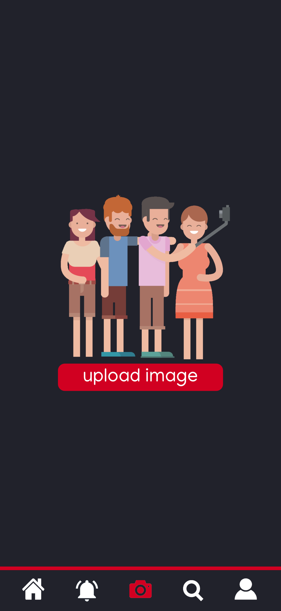
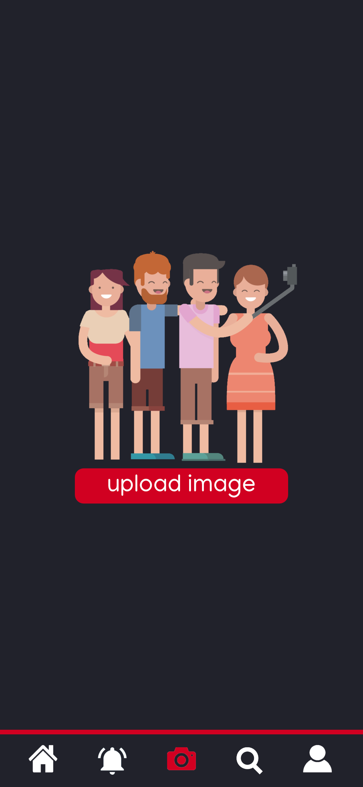

For my Sprint X project i am developing an app that let's users share pictures with each other and are able to like or comment on them.
The language that i use for this project is Dart and i will be using Flutter which is a UI toolkit developed by google that allows you to programm in one language and then compile it to native code for android and ios devices.
I have been interested in developing apps for quite some time and have some experience in this while using android studio and xamarin. This will be the first time i am using Dart and Flutter but i am eager to learn this since i think this will be very useful for later if i want to fully focus my career on developing apps.
Design Sketch
I started off by designing the look of the app and all the pages it should contain. I have asked my peers to give me feedback on each design and changed the design on some if i found it useful.
Colour Palette
Once happy with the designs in the previous step i wanted to make a colour palette that i would use throughout the entire app.
I wanted to use colours that stick out from each other and looked nice together.
The first colour palette was my first iteration which was okay but got the feedback that the middle colour looked a bit too much pink so i changed it into a more prominent red.
Coincidentally the colour palette of the app is resembling the colours of my portfolio but that's fine because i really like the combination and so did most peers.
Name + Logo
I didn't have any great idea for a name for my app but i wanted something simple and easy said so i just thought of some random words and YASS was the word i thought sounded best.
After some time i also created a definition for it which is "Your Application to Share Stories".
Going on, the logo of the app needed to be a font that fitted the background i made for the app, this background containing a lot of diamond shapes was something i wanted to be something repetitive, especially in presentations to get a reaction of "Hey a diamond shape, that reminds me of YASS".
The first font i chose is the image on the left which i liked but didn't really fit. I also got the feedback that it looked like
Y ASS since the spacing wasn't right.
The image on the right is my next iteration which fits a lot better and will be the logo that is going to be used.
Design
I have created the entire design in Affinity Designer. I started off by remaking the designs i made in the sketch in the programm after this i added colour to it by using my colour palette.
I work a lot with designing programms so this didn't take me too long and i think the result is pretty good.
 

Adobe XD Prototype
As you can see i have made a prototype with Adobe XD of my app
while using the designs i made.
I think this gif shows quite clearly how the app is going to look
and work.
This is the first time i have used Adobe XD and i think i did a
pretty okay job.
I will definitely use Adobe XD for more projects since it's a really
easy and solid way to present a clear picture to a client.

Presentation about YASS
These pages are all made by me to show a kind of presentation about my app.
I wanted to show the information and features of my app in a visually pleasing way and thought that a presentation was the way to go.
I also wanted to make a sort of advertisement that could be used for my app which is the last page.
Reflection
I think this project will be one of the most interesting and fun ones i am working on so far.
I am learning a lot experience from everything i have made so far especially developing an app which i can take with me when i am following the specialization Smart Mobile.
So far i am still working on building the app and figuring out how everyone works.